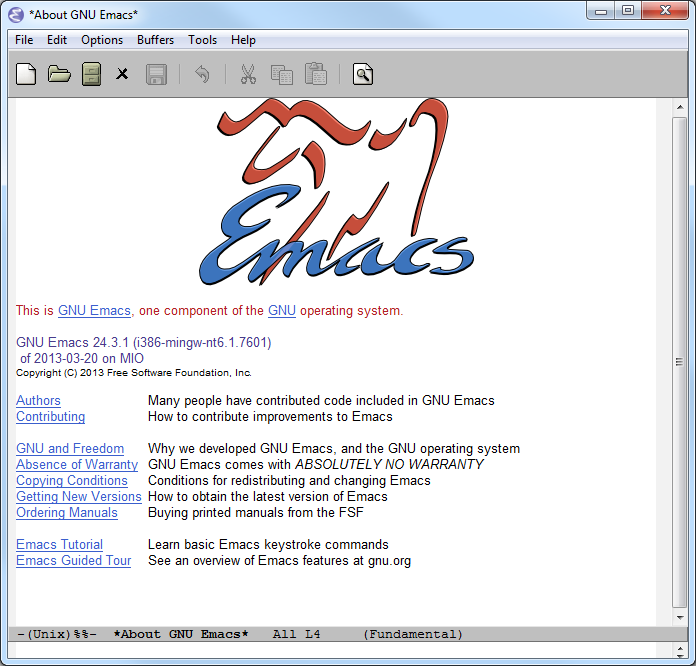

Hideki Saito's Emacs Builds
This site provides a precompiled build of Emacs prepared by Hideki Saito.
What is Emacs?
GNU Emacs is an extensible, customizable text editor—and more. At its core is an interpreter for Emacs Lisp, a dialect of the Lisp programming language with extensions to support text editing. The features of GNU Emacs include:
- Content-sensitive editing modes, including syntax coloring, for a variety of file types including plain text, source code, and HTML.
- Complete built-in documentation, including a tutorial for new users.
- Full Unicode support for nearly all human languages and their scripts.
- Highly customizable, using Emacs Lisp code or a graphical interface.
- A large number of extensions that add other functionality, including a project planner, mail and news reader, debugger interface, calendar, and more. Many of these extensions are distributed with GNU Emacs; others are available separately.
(As described in GNU Emacs)
Download
Current version: 24.3
Binaries
Use the following link to download the build. You can also see the list of files provided here.
Windows
- Emacs Build and its signature file
- Emacs Barebin Build and its signature file (mostly useful for upgrading)
- XPM library and its signature (This is provided here as lack of this file will affect correct rendering of toolbar and such.)
Mac
Linux
Linux precompiled binary was attempted, however, handling of shared library makes it unpractical unless it is coupled with a package manager which can automatically satisfy dependencies, which I will not be committing at this point. Precompiled binaries on Linux will require every dependant shared libraries to exist in the system (and won't even run without them, whether you are using it or not) therefore, to provide out of the box experience with Linux will require every dependencies to be packed into the binary, which is is not very realistic.
Since making users going through mess of installing dependencies just to run this build is as bad as having them get tools required to compile and then compile one themselves. (Which is not that complicated on Linux, really.) For users not willing to compile the build themselves can either stick with one bundled with the distribution itself, or find third-party package manager who packages latest Emacs for their distributions.
Source files
- Emacs Source and its signature signed by the official distribution.
- XPM Library
About the Build
What is the license?
See License Information.
What makes Hideki Saito's Emacs Builds different?
Not much. It's probably quite identical to the official binary released by the Free Software Foundation. It may come little earlier than the official build.
How do I spot the difference?

A screenshot from the build (as of 24.3)
If you are using Hideki Saito's Emacs Builds, you will see it is built on one of the following machine:
- MIO (Windows 7)
- MADOKA (Linux x86_64)
- SAYAKA (Linux x86_64)
- NANOHA (Linux x86)
- hidekimac (Mac)
Unless somehow cross compiled, it should typically say it is built on MIO but is subject to change. (This is where the official binary would say MARVIN.) A binary package will also be signed using OpenPGP key AFF2E40B.
Will it be the latest version?
As long as my interest and compilation environment lasts. I'm moving toward Linux these days, and thus, it is possible my self-interest of having self-compiled version of Emacs for Windows will be gone once the transition is complete.
Which operating systems does it support?
These are general guideline as I have not tested on every platform other than the one I have compiled on. You are more than welcome to try on any of platforms, but as the GPL says, there is "NO WARRANTY FOR THE PROGRAM" and rightly so.
Windows
It is built and tested on Windows 7. It should run on most of modern, but older Windows NT based platforms (i.e. Windows XP) without much issue, too. It will be probably difficult to run on Windows 9x operating systems. It should also run on newer Windows such as Windows 8, but I have not tested, and currently do not have any plans to test on the platform.
Mac
Built and tested on 10.8. May run on earlier version.
Which library does it include?
For Windows
For Mac
The distribution should satisfy every dependencies.
How do I build Emacs?
I have provided documentation of how it can be done.
Where's that splash screen?
You mean this? It's not included. You have to make your own – look up "fancy splash" in the Customization.
Is this page authored in Emacs, too?
Of course. Emacs with Org-mode!
About Hideki Saito
Who is Hideki Saito?
See my Google+ page
What Hideki's most favorite things about Emacs?
I've prepared an essay about it. Check it out!
Further Readings
Other links
Other Emacs Related Projects of Hideki Saito
- Hideki's Emacs Utilities contains some small scripts
- SKK Anime Dictionary contains SKK dictionary files of anime terms.
Like what's I'm doing?
- Bitcoin:
15EK2zSTCWpZqMk8nbZpVe2pEMZt6E3ST3